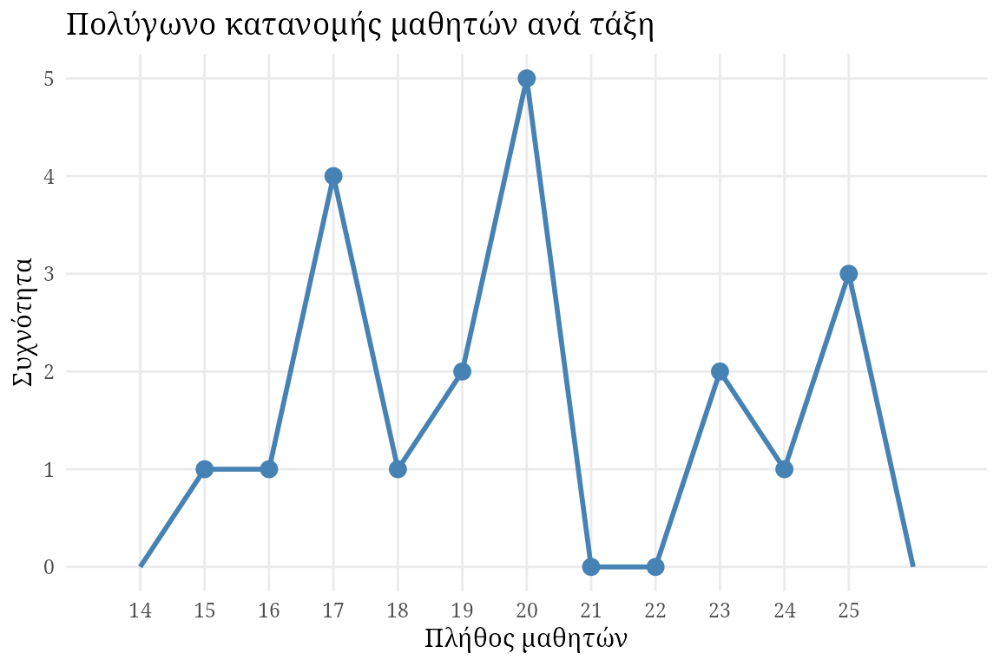

Στατιστική στην Εκπαιδευτική Έρευνα
Πανεπιστήμιο Δυτικής Μακεδονίας
Εξάμηνο 5o
Σημειώσεις του μαθήματος
Επιλογές:
- Διαβάστε online (βρίσκεστε εδώ)
- 📄 Download PDF
Περιεχόμενα
Οι σημειώσεις οργανώνονται στα ακόλουθα κεφάλαια:
Σχετικά
Συγγραφέας: Αλέξανδρος Ρέκκας
Μάθημα: Στατιστική στην εκπαιδευτική έρευνα
Οι σημειώσεις αυτές έχουν σχεδιαστεί ώστε να συμπληρώνουν τις παρουσιάσεις των διαλέξεων και να αποτελούν μια ολοκληρωμένη αναφορά για το υλικό του μαθήματος.
Βασικές στατιστικές έννοιες
Η έρευνα στην εκπαίδευση κατά ένα πολύ σημαντικό μέρος της περιλαμβάνει τη συλλογή πληροφοριών. Συνήθως, με τη λήξη συλλογής της πληροφορίας οι ερευνητές/τριες καταλήγουν με έναν τεράστιο όγκο μετρήσεων είτε, παλιότερα, σε χαρτί είτε σήμερα σε ηλεκτρονική μορφή. Για την επεξεργασία και αξιοποίηση αυτής της πληροφορίας χρησιμοποιούνται μέθοδοι που συνοπτικά αποκαλούμε “στατιστική”. Η στατιστική μπορεί να χρησιμοποιηθεί τόσο για την οργάνωση και τη συνόψιση της συγκεντρωμένης πληροφορίας όσο και για την συστηματική κατασκευή μίας ερμηνείας της κατάστασης από την οποία η πληροφορία αυτή προέκυψε.
Πληθυσμός και δείγμα
Κατά την εκτέλεση μίας μελέτης ο/η ερευνητής/τρια ξεκινά διατυπώνοντας ένα γενικό ερώτημα για μία συγκεκριμένη ομάδα ανθρώπων που τον/την ενδιαφέρουν. Με στατιστικούς όρους, το σύνολο όλων των ατόμων ενδιαφέροντος μίας μελέτης ονομάζεται πληθυσμός. Για παράδειγμα, πληθυσμός σε μία εκπαιδευτική έρευνα θα μπορούσε να είναι όλοι οι μαθητές νηπιαγωγείων της Δυτικής Μακεδονίας.
Προφανώς, σε μία μελέτη είναι πολύ δύσκολο να συλλεχθούν οι απαιτούμενες πληροφορίες για το σύνολο του πληθυσμού ενδιαφέροντος, καθώς, τις περισσότερες φορές, αυτός μπορεί να είναι απαγορευτικά μεγάλος. Οπότε, η αμέσως καλύτερη προσέγγιση είναι να χρησιμοποιηθεί ένα υποσύνολο του πληθυσμού, με την ελπίδα ότι αυτό θα “μοιάζει” με τον πληθυσμό. Ένα τέτοιο υποσύνολο ονομάζεται δείγμα. Με στατιστικούς όρους, δείγμα ονομάζεται ένα σύνολο ατόμων το οποίο διαλέχτηκε από τον πληθυσμό με στόχο να τον αντιπροσωπεύσει σε μία ανάλυση.
Μία μελέτη εκπαιδευτικής έρευνας στοχεύει να περιγράψει ή να βγάλει συμπεράσματα για συγκεκριμένα χαρακτηριστικά του πληθυσμού. Τα χαρακτηριστικά αυτά πρέπει να είναι επακριβώς καθορισμένα και μετρήσιμα. Στη στατιστική, τα χαρακτηριστικά αυτά αποκαλούνται παράμετροι. Επομένως, παράμετρος είναι ένα χαρακτηριστικό του πληθυσμού, άγνωστο αλλά μετρήσιμο.
Καθώς η γνώση της τιμής μιας παραμέτρου συνήθως απαιτεί τη λήψη μετρήσεων από το σύνολο του πληθυσμού — πράγμα συνήθως αδύνατο — κατά την εκτέλεση στατιστικών αναλύσεων αρκούμαστε στην εξαγωγή εκτιμήσεων για αυτήν την τιμή με την αξιοίηση του δείγματος. Η εκτίμηση της τιμής μιας παραμέτρου υπολογίζεται συνήθως με τον συνδυασμό των μετρήσεων του δείγματος (π.χ. άθροισμα, μέσος όρος). Με τη χρήση στατιστικής ορολογίας, ένας μαθηματικός συνδυασμός των μετρήσεων ενός δείγματος από τον πληθυσμό ενδιαφέροντος ονομομάζεται στατιστικό ή στατιστική συνάρτηση ή δειγματοσυνάρτηση.
Μεταβλητές
Μεταβλητή είναι οποιοδήποτε μετρήσιμο χαρακτηριστικό ατόμων ή πραγμάτων το οποίο μπορεί να παίρνει διαφορετικές τιμές. Σε αντίθεση, μία σταθερά είναι ένα χαρακτηριστικό το οποίο πάιρνει μία και μοναδική τιμή σε ολόκληρο τον πληθυσμό. Οι σταθερές, αν και φαίνεται ότι δεν έχουν ιδιαίτερο ενδιαφέρον, στην πραγαμτικότητα αντικατοπτρίζουν τις αποφάσεις του ερευνητή/τριας για περιορισμό του πληθυσμού ενδιαφέροντος. Για παράδειγμα, σε μία μελέτη με στόχο το σύνολο των μαθητριών στα νηπιαγωγεία της Δυτικής Μακεδονίας το φύλο είναι μία σταθερά.
Οι μεταβλητές μπορούν να χωριστούν σε δύο κατηγορίες ανάλογα με τις τιμές που μπορούν να λάβουν:
- Οι διακριτές μεταβλητές παίρνουν τιμές μέσα από ένα σύνολο αδιαίρετων κατηγοριών πλήρως διαχωρίσιμων μεταξύ τους (π.χ. επίπεδο εκπαίδευσης γονέων, δήμος κατοικίας μαθητή, πλήθος μαθητών σε μία τάξη).
- Οι συνεχείς μεταβλητές μπορούν να πάρουν οποιαδήποτε τιμή μέσα σε ένα σύνολο. Μεταξύ δύο πιθανών τιμών μίας συνεχούς μεταβλητής υπάρχει άπειρο πλήθος διαφορετικών δυνατών τιμών (π.χ. ηλικία διδάσκοντος, βάρος μαθητή).
Στην περίπτωση των συνεχών μεταβλητών (σε αντίθεση με τις διακριτές μεταβλητές), είναι πολύ σπάνιο να μετρήσουμε την ίδια τιμή πολλές φορές σε ένα δείγμα που έχουμε συλλέξει. Αν παρατηρήσουμε κάτι τέτοιο για μία συνεχή μεταβλητή που μετρήσαμε, τότε θα πρέπει να αναθεωρήσουμε τον τρόπο μέτρησης της μεταβλητής ή να επανεξετάσουμε αν η εν λόγω μεταβλητή είναι πράγματι συνεχής. Τέλος, καθώς η ακρίβεια των εργαλείων που έχουμε για την μέτρηση των συνεχών μεταβλητών δεν είναι τέλεια, θα πρέπει να αντιμετωπίζουμε τις τιμές των συνεχών μεταβλητών περισσότερο ως διαστήματα και λιγότερο ως απόλυτες τιμές. Για παράδειγμα, αν το βάρος δύο μαθητών μίας τάξης νηπιαγωγείου μετρηθεί ως 19 kg, δεν είναι λογικό να υποθέσουμε ότι οι μαθητές έχουν το ίδιο ακριβώς βάρος. Το πιο σωστό θα ήταν να θεωρήσουμε ότι και οι δύο μαθητές έχουν ένα βάρος μεταξύ π.χ. 18.5 και 19.5 κιλών. Το εύρος του διαστήματος αυτού εξαρτάται κατά κύριο λόγο από την ακρίβεια της ζυγαριάς που χρησιμοποιήθηκε.
Κλίμακες μέτρησης μεταβλητών
Η συλλογή των τιμών μίας μεταβλητής που παρατηρούνται σε ένα δείγμα με τον έναν ή τον άλλον τρόπο προϋποθέτει τη μέτρηση με τη χρήση κάποιας κλίμακας. Για παράδειγμα, το ύψος των μαθητών μίας τάξης μπορεί να μετρηθεί είτε χρησιμοποιώντας τις κατηγορίες κοντός, μέτριος, ψηλός (διακριτή μεταβλητή) ή να μετρηθεί με ακρίβεια εκατοστού (συνεχής μεταβλητή). Οι κλίμακες μέτρησης έχουν μεγάλη σημασία γιατί επηρεάζουν τις στατιστικές μεθόδους που μπορούν να χρησιμοποιηθούν για την ανάλυσή τους.
Η ονομαστική κλίμακα ορίζει ως επιτρεπόμενες τιμές μίας μεταβλητής τα ονόματα διακριτών κατηγοριών. Οι κατηγορίες αυτές δεν μπορούν να διαταχθούν, δηλαδή δεν μπορούμε να συγκρίνουμε τη μία τιμή με την άλλη. Αν και οι κατηγορίες δεν είναι αριθμητικές μπορεί να παρουσιαστούν με αριθμητικές τιμές, π.χ. μπορεί να χρησιμοποιηθεί ο αριθμός 1 για να δηλώσει ως τόπο κατοικίας του μαθητή τον δήμο Φλώρινας και ο αριθμός 2 για να δηλώσει τον δήμο Καστορίας, χωρίς αυτό όμως να υποδηλώνει κάποια διάταξη για τους δύο δήμους.
Αντίθετα, σε μία διατάξιμη κλίμακα οι κατηγορίες παίρνουν τιμές η οποίες υποδηλώνουν διάταξη. Για παράδειγμα, η οικονομική κατάσταση του σπιτικού των μαθητών μίας τάξης θα μπορούσε να μετρηθεί χρησιμοποιώντας τις τιμές χαμηλή, μέτρια, υψηλή. Οι τιμές παρόλο που επιτρέπουν τη σύγκριση μεταξύ των μετρήσεων του δείγματος, δεν επιτρέπουν συμπεράσματα για το μέγεθος των διαφορών.
Τέλος, μεταβλητές που μετρήθηκαν χρησιμοποιώντας την ισοδιαστημική κλίμακα ή την αναλογική κλίμακα επιτρέπουν την εξαγωγή συμπερασμάτων σχετικά με τη διάταξη του δείγματος. Οι τιμές μίας μεταβλητής μετρημένης με μία ισοδιαστημική κλίμακα ιεραρχούνται και ταυτόχρονα τα διαστήματα μεταξύ διαδοχικών τιμών είναι σταθερά και τα ίδια. Για παράδειγμα, η θερμοκρασία μίας αίθουσας τους καλοκαιρινούς μήνες.
Η βασική διαφορά μίας ισοδιαστημικής κλίμακας από μία αναλογική κλίμακα, είναι ότι στην πρώτη περίπτωση η τιμή 0 είναι αυθαίρετη. Για παράδειγμα, δεν μπορούμε να πούμε ότι για δύο μετρήσεις θερμοκρασίας 20 και 40 βαθμών Κελσίου, η πρώτη είναι διπλάσια από την δεύτερη. Αν άλλη κλίμακα είχε χρησιμποιηθεί (π.χ. Fahrenheit) τότε ο λόγος των τιμών θα ήταν διαφορετικός. Σε μία αναλογική κλίμακα, το 0 έχει σημασία και υποδηλώνει απουσία. Η ύπαρξη ενός απόλυτου 0, υποδηλώνει ότι μπορούμε να μετρήσουμε το απόλυτο μέγεθος της μεταβλητής. Για παράδειγμα ύψος ίσο με 0 σημαίνει απουσία ύψους και ύψος 120 εκατοστών είναι διπλάσιο από το ύψος 60 εκατοστών. Το 0 σε αυτήν την περίπτωση δεν είναι σχετικό, αλλά απόλυτο. Επομένως, η αναλογική κλίμακα είναι μία ισοδιαστημική κλίμακα με την ύπαρξη ενός απόλυτου μηδέν.
Μαθηματικοί συμβολισμοί
Συνήθως, στις στατιστικές αναλύσεις συμβολίζουμε τις τυχαίες μεταβλητές με κεφαλαία γράμματα του λατινικού αλφαβήτου. Για παράδειγμα, μπορούμε να συμβολίσουμε με \(X\) το ύψος των μαθητών των νηπιαγωγείων της περιφέρειας Δυτικής Μακεδονίας. Για συγκεκριμένες μετρήσεις της μεταβλητής \(X\) χρησιμοποιούμε το ίδιο πεζό γράμμα (\(x\)). Για παράδειγμα, έστω ότι έχουμε ένα δείγμα μεγέθους \(n = 100\) από μαθητές των νηπιαγωγείων της περιφέρειας Δυτικής Μακεδονίας. Για κάθε έναν από αυτούς τους μαθητές, συμβολίζουμε την μέτρηση του ύψους με \(x_i, i = 1,\dots,100\).
Με τις μετρήσεις μίας μεταβλητής \(X\) συνήθως θέλουμε να κάνουμε πράξεις. Μία από τις πιο συχνές ανάγκες που πορκύπτουν κατά την εκτέλεση μίας στατιστικής ανάλυσης είναι να αθροίσουμε τις τιμές \(x_i\) που συλλέχθηκαν. Ο μαθηματικός συμβολισμός στην περίπτωση αυτή είναι το \(\sum\). Στο προηγούμενο παράδειγμα, το άθροισμα όλων των μετρήσεων του ύψους των 100 μαθητών θα μπορούσε να συμβολιστεί με \[ \sum X = \sum_{i = 1}^{100}x_i = x_1 + x_2 +\dots + x_100 \] Οι πράξεις αυτές μπορούν να γίνουν αρκετά πιο σύνθετες, π.χ. να αθροίσουμε τα τετράγωνα των μετρήσεων του ύψους (\(\sum X^2\)) ή να αθροίσουμε το ύψος τους μειωμένο κατά μία μονάδα (\(\sum (X-1)\)).
Κατανομές συχνοτήτων
Ο στόχος οποιασδήποτε συλλογής δεδομένων είναι κατανόηση του προβλήματος το οποίου ζητάμε την απάντηση και η εξαγωγή συμπερασμάτων τα οποία στη συνέχεια θα μπορέσουν με τον έναν ή τον άλλο τρόπο να τροφοδοτήσουν την πράξη. Πριν όμως το κάνουμε αυτό, σχεδόν πάντα, ξεκινάμε από μία απόπειρα κατανόησης των δεδομένων που μαζεύτηκαν. Δεν μπορεί κανείς να βγάλει εύκολα συμπεράσματα απλά κοιτώντας έναν πίνακα με μερικές δεκάδες στήλες και μερικές εκατοντάδες ή χιλιάδες γραμμές.
Μία από τις πιο απλές και χρήσιμες μεθόδους περιγραφής των δεδομένων που συλλέχθηκαν για ένα σύνολο μεταβλητών που μας ενδιαφέρει στηρίζεται στην έννοια της συχνότητας. Με απλά λόγια, η συχνότητα μίας τιμής μίας μεταβλητής που έχει μετρηθεί σε ένα δείγμα μας μετράει πόσες φορές εμφανίζεται η συγκγριμένη μεταβλητή σε σχέση τις υπόλοιπες.
Απόλυτη, σχετική και ποσοστιαία συχνότητα
Ξεκινάμε από την περίπτωση των διακριτών μεταβλητών. Έστω ότι έχουμε τη μεταβλητή \(X\), το πλήθος των μαθητών ανά τάξη, και ένα δείγμα από 20 νηπιαγωγεία της χώρας με τιμές \(x_1,\dots,x_20\):
Βλέπουμε ότι οι τιμές κειμένονται από 15 μέχρι 25. Οπότε μπορούμε εύκολα να φτιάξουμε έναν πίνακα συχνοτήτων
Ως άσκηση, επιβεβαιώστε ότι \(\sum X = \sum xf\).
Χρησιμοποιώντας τις συχνότητες εμφάνισης των τιμών μιας μεταβλητής μπορούμε να ορίσουμε τις αναλογίες. Η αναλογία \(q\) ορίζεται ως \[ f_r = \frac{f}{N}, \] όπου \(N\) είναι το μέγεθος του δείγματος. Επειδή η αναλογία περιγράφει τη συχνότητα μίας τιμής σε σχέση με μέγεθος του δείγματος, συχνά αποκαλείται και σχετική συχνότητα. Τέλος, μία αναλογία \(q\) μπορεί πολύ εύκολα να μετατραπεί σε ποσοστό \(p\) πολλαπλασιάζοντας το αποτέλεσμα με το 100 \[ f_{\%} = 100\times f_r = \Big(100\times \frac{f}{N}\Big) \% \]
Στην προηγούμενη περίπτωση, το πλήθος των μοναδικών τιμών που τελικά πήρε η μεταβλητή \(X\) ήταν σχετικά μικρό (συνολικά 9 διαφορετικές τιμές). Τι γίνεται όμως αν το πλήθος των πιθανών τιμών είναι πολύ μεγάλο; Για παράδειγμα, έστω ότι ένα δείγμα 30 μαθητών δημιούργησε μία ζωγραφιά με τελείες. Έστω \(Y\), το πλήθος των στιγμάτων που ζωγράφισε κάθε παιδί και οι τιμές που παρατηρήσαμε:
Για να δημιουργήσουμε έναν πίνακα συχνοτήτων ο οποίος να είναι χρήσιμος, μπορούμε να χωρίσουμε τις τιμές σε κατηγορίες. Για παράδειγμα, ένας πιθανός διαχωρισμός θα ήταν 21-40, 41-60, 61-80, 81-100, δημιουργώντας τον πίνακα ομαδοποιημένων συχνοτήτων
Ως άσκηση μπορείτε να συμπληρώσετε τον πίνακα συχνοτήτων με τις σχετικές και τις ποσοστιαίες συχνότητες των νέων κατηγοριών.
Γραφήματα κατανομής συχνοτήτων
Στην περίπτωση μεταβλητών που έχουν μετρηθεί σε μία ισοδιαστημική ή αναλογική κλίμακα δύο ειδών γραφήματα μπορούν να χρησιμοποιηθούν για να οπτικοποιήσουν την κατανομή των συχνοτήτων που παρατηρήθηκαν: τα ιστογράμματα και τα πολύγωνα.
Έστω ότι μελετάμε πάλι το παράδειγμα με το μέγεθος της τάξης. Για να κατασκευάσουμε ένα ιστόγραμμα των συχνοτήτων ιστόγραμμα, πρώτα καταγράφουμε τις μοναδικές τιμές που βρήκαμε για τα μεγέθη των τάξεων κατά μήκος του άξονα Χ. Στη συνέχεια, σχεδιάζουμε μια γραμμή πάνω από κάθε τιμή Χ, έτσι ώστε:
- Το ύψος της γραμμής να αντιστοιχεί στη συχνότητα για την εν λόγω κατηγορία.
- Για τις συνεχείς μεταβλητές, το πλάτος της γραμμής να εκτείνεται στα πραγματικά όρια της κατηγορίας.
Για τις διακριτές μεταβλητές, κάθε γραμμή να εκτείνεται ακριβώς στο μισό της απόστασης από την παρακείμενη κατηγορία σε κάθε πλευρά.
Για να κατασκευάσουμε ένα πολύγωνο, ξεκινάμε καταγράφοντας τις μοναδικές αριθμητικές τιμές κατά μήκος του άξονα Χ. Στη συνέχεια:
- Μια κουκκίδα τοποθετείται στο κέντρο πάνω από κάθε βαθμολογία, έτσι ώστε η κατακόρυφη θέση της κουκκίδας να αντιστοιχεί στη συχνότητα της κατηγορίας.
- Μια συνεχής γραμμή σχεδιάζεται από κουκκίδα σε κουκκίδα για να συνδέσει τη σειρά των κουκκίδων.
- Το γράφημα ολοκληρώνεται με το σχεδιασμό μιας γραμμής προς τα κάτω στον άξονα Χ (μηδενική συχνότητα) σε κάθε άκρο του εύρους των βαθμολογιών.
Οι τελικές γραμμές συνήθως σχεδιάζονται έτσι ώστε να φτάνουν στον άξονα Χ σε ένα σημείο που βρίσκεται μία κατηγορία κάτω από τη χαμηλότερη βαθμολογία στην αριστερή πλευρά και μία κατηγορία πάνω από την υψηλότερη βαθμολογία στη δεξιά πλευρά.

Ένα πολύγωνο μπορεί επίσης να χρησιμοποιηθεί με δεδομένα που έχουν ομαδοποιηθεί σε διαστήματα. Για μια ομαδοποιημένη κατανομή, τοποθετούμε κάθε κουκκίδα ακριβώς πάνω από το μέσο σημείο του διαστήματος. Το μέσο σημείο μπορεί να βρεθεί υπολογίζοντας τον μέσο όρο των υψηλότερων και χαμηλότερων βαθμολογιών στο διάστημα. Για παράδειγμα, για το διάστημα 20–29 θα έχει μέσο σημείο 24,5.
Ως άσκηση ζωγραφίστε το πολύγωνο για το παράδειγμα με το πλήθος των στιγμάτων που έκανε ο κάθε μαθητής στη ζωγραφιά που δημιούργησε.
Στην περίπτωση μεταβλητών που μετρήθηκαν σε μία ονομαστική ή διατάξιμη κλίμακα χρησιμοποιούμε τα ραβδογράμματα. Στην πράξη, τα ραβδομγράμματα μοιάζουν πολύ με τα ιστογράμματα με τη διαφορά ότι οι μπάρες στα ραβδομγράμματα δεν ακουμπούν μεταξύ τους. Για τις ονομαστικές μεταβλητές οι αποστάσεις δηλώνουν ότι η κλίμακα μέτρησης αποτελείται από ξεχωριστές πιθανές τιμές. Στην περίπτωση διατάξιμων μεταβλητών τα κενά τονίζουν ότι οι αποστάσεις μεταξύ των πιθανών τιμών δεν μπορούν να θεωρηθούν ίσες. Για παράδειγμα, έστω ότι έχουμε τον παρακάτω πίνακα συχνοτήτων για τη μεταβλητή
Χ: το χρώμα μαρκαδόρου που χρησιμοποίησε ο μαθητής για μια μονοχρωματική ζωγραφιά

Μέτρα θέσης
Τα μέτρα θέσης χρησιμοποιούνται για να περιγράψουν με τη χρήση ενός μόνο αριθμού το κέντρο της κατανομής των τιμών μίας τυχαίας μεταβλητής. Με απλά λόγια, τα μέτρα θέσης περιγράφουν γύρω από ποια τιμή συγκεντρώνονται οι τιμές μίας τυχαίας μεταβλητής που μετρήθηκε κατά την εκτέλεση μίας μελέτης. Δυστυχώς, δεν υπάρχει ένας μοναδικός τρόπος που να μας δίνει με τον καλύτερο τρόπο τη θέση των τιμών μίας μεταβλητής. Στη συνέχεια θα δούμε τρεις μεθόδους για τον υπολογισμό της θέσης: τη μέση τιμή, τη διάμεσο και την επικρατούσα τιμή.
Μέση τιμή
Η μέση τιμή για την κατανομή των τιμών μίας τυχαίας μεταβλητής υπολογίζεται ως μέσος όρος των τιμών της, δηλαδή αθροίζοντας όλες τις τιμές και διαιρώντας με το πλήθος τους:
\[ \bar{x} = \frac{\sum_{i=1}^nx_i}{n} \]
Καθώς η μέση τιμή υπολογίζεται με τη χρήση \(\sum_{i=1}^nx_i\) και με το \(n\) μπορούμε να την υπολογίσουμε ακόμα κι αν δεν έχουμε τις αρχικές μετρήσεις αλλά τον πίνακα συχντοτήτων των μετρήσεων για μία μεταβλητή. Για παράδειγμα, έστω ότι σε μία μελέτη ο/η ερευνητής/τρια θέλησε να αξιολογήσει τις κινητικές δεξιότητες των μαθητών μίας τάξης νηπιαγωγείου δίνοντάς τους 4 τουβλάκια και ζητώντας τους να τα τοποθετήσουν το ένα πάνω στο άλλο φτιάχνοντας έναν πύργο. Έστω \(X\) η μεταβλητή “το πλήθος από τουβλάκια που χρησιμοποίησε ο μαθητής για τον πύργο του”. Ο πίνακας συχνοτήτων των μετρήσεων της μεταβλητής \(X\) φαίνεται στον παρακάτω πίνακα.
Για τον υπολογισμό της μέσης τιμής της \(X\) θα χρειαστούμε το άθροισμα \[ \sum X = \sum_{i=1}^4 f(x_i)x_i = 1\times 1 + 4\times 2 + 9\times 3 + 6\times 4 = 60 \]
Επίσης θα χρειαστούμε το μέγεθος του δείγματος \(N\) το οποίο μπορούμε να βρούμε αθροίζοντας όλες τις συχνότητες \[ N = \sum_{i=1}^4f(i) = 1 + 4 + 9 + 6 = 20 \]
Επομένως, η μέση τιμή \(\mu\) μπορεί να υπολογιστεί από
\[ \mu = \frac{\sum X}{N} = \frac{\sum_{i=1}^4f(x_i)x_i}{\sum_{i=1}^4f(i)} = \frac{60}{20} = 3 \]
Διάμεσος
Αν και η μέση τιμή είναι η πιο εύληπτη μέθοδος για τον υπολογισμό της θέσης των μετρήσεων μιας μεταβλητής, έχει ένα σημαντικό μειονέκτημα. Στην περίπτωση που υπάρχουν ακραίες τιμές η μέση τιμή μπορεί να επηρεαστεί τόσο πολύ, ώστε το αποτέλεσμα να μην είναι αντιπροσωπευτικό του δείγματος. Για παράδειγμα, έστω ότι μετράμε τη μέση ηλικία σε μια αίθουσα νηπιαγωγείου. Η αίθουσα έχει 4 μαθητές ηλικίας 5 ετών και έναν δάσκαλο ηλικίας 60 ετών. Τότε, η μέση ηλικία στην αίθουσα είναι \[ \mu = \frac{4\times 5 + 60}{5} = \frac{80}{5} = 16 \]
Στη συγκεκριμένη περίπτωση, η τιμή 16 δεν αντιπροσωπεύει κανέναν. Το νούμερο είναι πολύ μεγάλο για όλους τους μαθητές της αίθουσας και πολύ μικρό για τον δάσκαλο. Είναι σημαντικό να θυμόμαστε ότι σκοπός των μέτρων θέσης είναι να μας δώσουν την τιμή εκείνη γύρω από την οποία συγκεντρώνεται η πλειοψηφία των τιμών μίας μεταβλητής, ώστε να μπορέσουμε να αντιπροσωπεύσουμε όλες τις μετρήσεις με έναν αριθμό. Συμβαίνει αυτό στο συγκεκριμένο παράδειγμα;
Σε αυτές τις περιπτώσεις, αντί της μέσης τιμής μπορούμε να χρησιμοποιήσουμε τη διάμεσο, η οποία ορίζεται ως η μεσαία τιμή των μετρήσεων της μεταβλητής. Για τον υπολογισμό της, πρώτα αναδιατάσσουμε το δείγμα σε αύξουσα σειρά και στη συνέχεια υπολογίζουμε τη διάμεσο ως εξής:
- Αν το μέγεθος του δείγματος (\(n\)) είναι περιττός (μονός) αριθμός, η διάμεσος είναι η μεσαία τιμή. Η μεσαία τιμή είναι η \(\frac{n+1}{2}\), για παράδειγμα, αν το δείγμα έχει μέγεθος 5, τότε η μεσαία τιμή είναι η \(\frac{5+1}{2}=3\).
- Αν το μέγεθος του δείγματος είναι άρτιος (ζυγός) αριθμός, τότε η διάμεσος υπολογίζεται ως ο μέσος όρος των δύο μεσαίων τιμών. Αν το δείγμα έχει μέγεθος \(n\), τότε οι δύο μεσαίες τιμές είναι η \(\frac{n}{2}\) και η επόμενη. Για παράδειγμα, αν το μέγεθος του δείγματος είναι 4, τότε η διάμεσος θα υπολογιστεί ως ο μέσος όρος της δεύτερης και της τρίτης τιμής.
Ποσοστημόρια
Ποσοστημόριο \(P_k\) είναι η τιμή εκείνη από την οποία το \(k\%\) των μετρήσεων μιας μεταβλητής είναι μικρότερο. Για παράδειγμα, αν για τη μεταβλητή \(X\) (το ύψος των μαθητών σε μία τάξη νηπιαγωγείου) βρούμε ότι το 75% ποσοστημόριο είναι 120cm (\(P_{75}=120\)) τότε το 75% των μαθητών έχει ύψος μικρότερο από 120cm.
Παρατήρηση
Η διάμεσος είναι στην πραγματικότητα το 50%-ποσοστημόριο.
Για τον υπολογισμό του ποσοστημορίων ακολουθούμε την παρακάτω διαδικασία:
- Τοποθετούμε τις μετρήσεις σε αύξουσα σειρά
- Κατασκευάζουμε τον πίνακα τάξεων. Ο πίνακας αυτός έχει δύο στήλες: (1) κάθε τιμή του της μεταβλητής και (2) την τάξη της συγκεκριμένης τιμής.
- Υπολογίζουμε την τάξη του ζητούμενου ποσοστημορίου από τον τύπο \[ r_k=\frac{k}{100}(n + 1) \]
- Υπολογίζουμε την τιμή της μεταβλητής που αντιστοιχεί στο συγκεκριμένο ποσοστημόριο κάνοντας παρεμβολή αν η τάξη του ποσοστημορίου δεν είναι ακέραιος αριθμός (βλέπε παρακάτω).
Για παράδειγμα, έστω ότι παρατηρούμε τις τιμές για τα ύψη: 108, 107, 118, 100, 98, 103, 112, 109, 96, 101 cm.
Έστω ότι θέλουμε να βρούμε το 25%-ποσοστημόριο των μετρήσεων του ύψους. Τοποθετούμε τις μετρήσεις σε αύξουσα σειρά και κατασκευάζουμε τον πίνακα τάξεων:
Υπολογίζουμε το \(r(P_{25})\): \[ r(P_{25}) = \frac{25}{100}(10+1) = 2.75 \]
Αφού η τάξη του ποσοστημορίου δεν είναι ακέραιος αριθμός και πέφτει μεταξύ 2 και 3 θα πρέπει να εξάγουμε την τιμή που αντιστοιχεί στη μεταβλητή κάνοντας παρεμβολή. Οι τιμές του \(X\) με τάξεις 2 και 3 είναι 98 και 100 αντίστοιχα. Η απόσταση μετξύ των δύο αυτών τιμών είναι \(100 - 98 = 2\). Για την παρεμβολή πολλαπλασιάζουμε το δεκαδικό μέρος του ποσοστημορίου (0.75) με το διαφορά (2) και προσθέτοντας στο μικρότερο (98) βρίσκουμε την τιμή του 25%-ποσοστημορίου (\(0.75\times 2 + 98 = 99.5\)).
Τέλος, πολύ συχνά στις στατιστικές μας ενδιαφέρουν τα 25%,50%,75%-ποσοστημόρια. Τα ποσοστημόρια αυτά αποκαλούνται τεταρτημόρια. Για παράδειγμα το 25%-ποσοστημόριο είναι το πρώτο τεταρτημόριο, το 50%-ποσοστημόριο (διάμεσος) είναι το δεύτερο τεταρτημόριο κ.ο.κ.
Μέτρα μεταβλητότητας
Αν τα μέτρα θέσης του προηγούμενου κεφαλαίου μας περιγράφουν γύρω από πια τιμή συγκεντρώνονται οι μετρήσεις (τιμές) μίας μεταβλητής, τα μέτρα διασποράς μας δείχνουν πόσο οι μετρήσεις αυτές απομακρύνονται (διασπείρονται) γύρω από τη θέση (π.χ. τη μέση τιμή). Όπως και στην περίπτωση των μέτρων θέσης, δεν υπάρχει ένας μοναδικός τρόπος για να μετρήσουμε τη διασπορά που να είναι ο ιδανικός σε όλες τις περιπτώσεις. Εδώ θα δούμε μέρικα από τα πιο συχνά μέτρα διασποράς όπως είναι το εύρος, το ενδοτεταρτημοριακό εύρος και η διασπορά/τυπική απόκλιση.
Εύρος
Το εύρος είναι το πιο απλό από τα μέτρα διασποράς και υπολογίζεται ως η διαφορά μεταξύ της μέγιστης και της ελάχιστης τιμής μίας μεταβλητής. Συνήθως συμβολίζουμε το εύρος με το γράμμα \(R\), από την αγγλική λέξη range και το υπολογίζουμε από: \[ R = max(X) - min(X) \]
Το έυρος, αν και είναι πάρα πολύ εύκολο να υπολογιστεί, δυστυχώς είναι πολύ ευαίσθητο σε ακραίες τιμές. Η ύπαρξη ακόμη και μίας ακραίας τιμής μπορεί να δώσει λανθασμένη εντύπωση της πραγματικής μεταβλητότητας.
Ενδοτεταρτημοριακό εύρος
Η ιδέα είναι ίδια με αυτή του εύρους, ωστόσο, υπολογίζουμε τη διαφορά μεταξύ του πρώτου και του τρίτου τερτημορίου των τιμών μιας μεταβλητής. Το ενδοτεταρτημοριακό εύρος το συμβολίζουμε συνήθως με IQR από την αγγλική ορολογία interquartile range και το υπολογίζουμε από: \[ IQR = Q3-Q1 = P_{75} - P_{25} \]
Το ενδοτεταρτημοριακό εύρος δε μας δίνει πόσο απέχουν μεταξύ τους η ελάχιστη και η μέγιστη τιμή των μετρήσεων μιας μεταβλητής αλλά την απόσταση μεταξύ δύο τιμών ανάμεσα στις οποίες βρίσκεται το 50% των (μεσαίων) μετρήσεων μιας μεταβλητής. Το ενδοτεταρτημοριακό εύρος έχει μεγαλύτερη αντοχή στις ακραίες τιμές, αφού έχει μεταφέρει το ενδιαφέρον στις μεσαίες τιμές μιας μεταβλητής, αποκλείοντας το 25% των μεγαλύτερων και των μικρότερων τιμών.
Διασπορά και τυπική απόκλιση
Μέχρι τώρα ποσοτικοποιούμε τη μεταβλητότητα των μετρήσεων μίας μεταβλητής μετρώντας αποστάσεις μεταξύ των ακραίων τιμών της, είτε αυτές είναι το μέγιστο και το ελάχιστο ή κάποια τεταρτημόρια. Ένας άλλος τρόπος είναι να υπολογίσουμε με κάποιον τρόπο πόσο απομακρύνονται οι τιμές μίας μεταβλητής από το κέντρο (τη θέση, π.χ. τη μέση τιμή). Στη στατιστική, αποκαλούμε τις αποστάσεις των μετρήσεων από τη μέση τιμή αποκλίσεις. Με συμβολισμούς, απόκλιση ονομάζεται η ποσότητα \((x_i-\bar{x})\), όπου \(x_i\) είναι οι τιμές της μεταβλητής \(X\). Αν το μέγεθος του δείγματός μας είναι \(n\), τότε μπορούμε να υπολογίσουμε \(n\) αποκλίσεις από τη μέση τιμή \(\bar{x}\).
Για τον υπολογισμό της διασποράς της μεταβλητής \(X\) γύρω από τη μέση τιμή της πρέπει με κάποιον τρόπο να υπολογίσουμε το μέσο όρο των αποκλίσεων όλων των τιμών της \(X\). Δυστυχώς, το αν πάμε να υπολογίσουμε τον μέσο όρο των αποκλίσεων θα δούμε ότι αυτός θα είναι πάνοτε \(0\): \[ \begin{aligned} \frac{\sum_{i=1}^n(x_i-\bar{x})}{n} &= \frac{(x_1-\bar{x}) + (x_2 - \bar{x}) + \dots + (x_n - \bar{x})}{n} \\ &= \frac{(x_1 + x_2 + \dots + x_n) - n\bar{x}}{n} \\ &= \frac{x_1 + x_2 + \dots + x_n}{n} - \frac{n\bar{x}}{n} \\ &= \bar{x} - \bar{x} = 0 \end{aligned} \]
Μπορείτε να το επιβεβαιώσετε αυτό με αν προσπαθήσετε να υπολογίσετε τον μέσο όρο των αποκλίσεων σε ένα μικρό δείγμα, π.χ. \(X = [1, 2, 4, 5]\).
Το πρόβλημα προκύπτει από το γεγονός ότι οι αποκλίσεις παίρνουν και αρνητικές και θετικές τιμές, αναλόγως κάθε φορά αν η τιμή της \(X\) (δηλαδή το \(x_i\)) είναι μικρότερο ή μεγαλύτερο από τη μέση τιμή. Όταν το \(x_i\) είναι μεγαλύτερο από τη μέση τιμή, τότε η απόκλιση \((x_i-\bar{x}\) θα είναι θετική. Στην αντίθετη περίπτωση, θα είναι αρνητική.
Για τον υπολογισμό της διασποράς δε μας ενδιαφέρει αν η τιμές της \(X\) είναι πάνω ή κάτω από τη μέση τιμή. Το μόνο που μας ενδιαφέρει είναι η απόσταση αυτή καθεαυτή. Άρα θέλουμε να κάνουμε μια μετατροπή στην τιμή της απόκλισης, ώστε το αποτέλεσμα να είναι πάντα θετικό. Μία τέτοια μετατροπή, ιδιαίτερα χρήσιμη στη στατιστική, είναι να υψώσουμε όλες τις αποκλίσεις στο τετράγωνο, δηλαδή να υπολογίσουμε το \((x_i-\bar{x})^2\) αντί του \((x_i-\bar{x})\). Τώρα μπορούμε να υπολογίσουμε τον μέσο όρο των τετραγωνικών αποκλίσεων: \[ s_n^2 = \frac{\sum_{i=1}^n(x_i-\bar{x})^2}{n} = \frac{(x_1-\bar{x})^2+(x_2-\bar{x})^2+\dots +(x_n-\bar{x})^2}{n} \]
Η ποσότητα \(s_n^2\) ονομάζεται διακύμανση της μεταβλητής \(X\). Επομένως, με απλά λόγια, διακύμανση είναι ο μέσος όρος των τετραγωνικών αποκλίσεων των τιμών της μεταβλητής \(X\) από τη μέση τιμή.
Δυστυχώς, αν και η διακύμανση είναι ένα αξιόπιστο μέτρο μεταβλητότητας, έχει ένα σημαντικό μειονέκτημα. Δεν εκφράζεται με τις ίδιες μονάδες όπως η μεταβλητή \(X\). Ενώ εμάς μας ενδιαφέρει η μέση απόκλιση των τιμών της \(X\) από τη μέση τιμή της, η διακύμανση υψώνει αυτές τις αποκλίσεις στο τετράγωνο. Επομένως, η διακύμανση δεν είναι άμεσα ερμηνεύσιμη. Δεν μπορώ να τη χρησιμοποιήσω απευθείας για να προβλέψω πόση περιμένω να είναι η απόσταση μίας νέας μέτρησης από τη μέση τιμή. Αντίθετα, η διακύμανση μου λέει πόσο περιμένω να είναι το τετράγωνο αυτής της απόστασης. Επομένως, αν πάρουμε την τετραγωνική ρίζα της διακύμανσης (\(s_n^2\)), θα μπορέσουμε να βρούμε αυτό που ζητάμε.
Η ποσότητα \(s_n\), \[ s_n = \sqrt{s_n^2} = \sqrt{\frac{\sum_{i=1}^n(x_i-\bar{x})^2}{n}} \] ονομάζεται τυπική απόκλιση. Η τυπική απόκλιση \(s_n\), μετράται στην ίδια μονάδα μέτρησης με την μεταβλητή \(X\) και επομένως μπορεί να χρησιμοποιηθεί για να περιγράψει το μέγεθος των αποστάσεων που αναμένουμε για τις τιμές της \(X\) από τη μέση τιμή της.